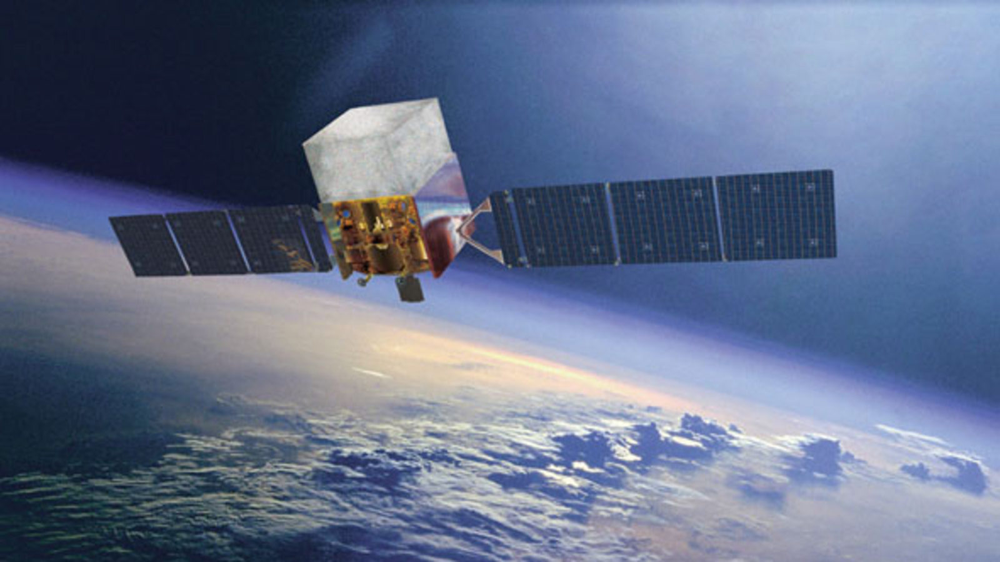
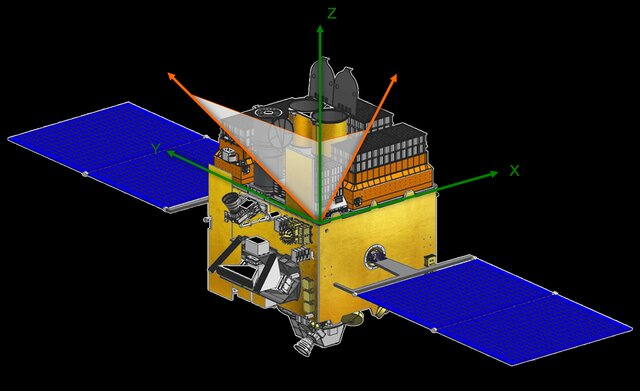

Rushikesh Sonawane
PhD Researcher | High-Energy Astrophysics
“Exploring the physics of Gamma-Ray Bursts through observations, modeling, and simulations.”
About Me
I am a PhD researcher in high-energy astrophysics working on Gamma-Ray Bursts (GRBs). My research integrates spectro-polarimetry, spectral modeling, and numerical simulations to investigate the physical mechanisms driving the most energetic explosions in the universe.
I am an active member of the Fermi-GBM and AstroSat-CZTI collaborations.

Fermi Gamma-ray Space Telescope
(Gamma-ray Burst Monitor – GBM)

AstroSat Space Observatory
(Cadmium Zinc Telluride Imager – CZTI)
Research Interests
- Spectro-polarimetric studies of GRBs using joint Fermi-GBM and AstroSat-CZTI analysis, probing polarization signatures and jet structure.
- Spectral modeling of GRB emission using Fermi-GBM and Fermi-LAT data.
- Numerical simulations of GRB jets to study jet dynamics, emission regions, and geometry.
Selected Publications
-
Sonawane, R., Iyyani, S., Gupta, S., Chattopadhyay, T.,
Bhattacharya, D., Bhalerao, V. B., Vadawale, S. V., & Dewangan, G. C. (2025).
Spectro-polarimetry of GRB 180427A: Evidence for Distinct Emission Sites with Varying Polarization.
The Astrophysical Journal. -
Dimple, Gompertz, B. P., Levan, A. J., Malesani, D. B., Laskar, T.,
Bala, S., … Sonawane, R., … Zafar, T. (2025).
GRB 241105A: A test case for GRB classification and rapid r-process nucleosynthesis channels.
Monthly Notices of the Royal Astronomical Society.